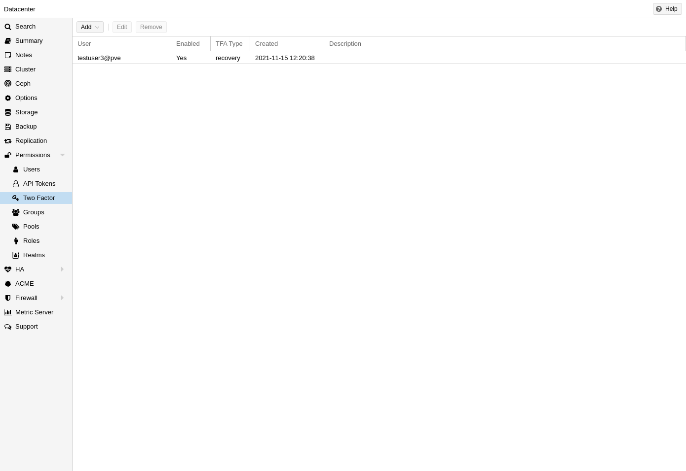
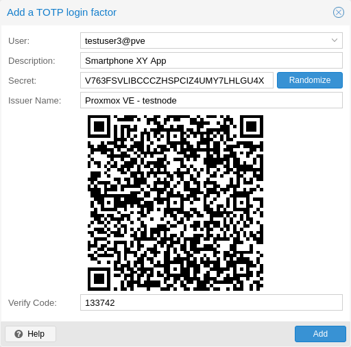
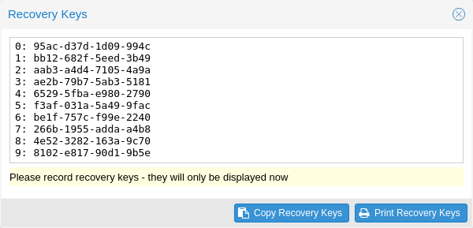
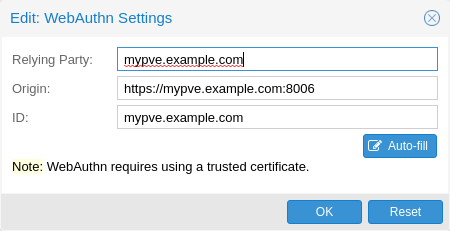

There are two ways to use two-factor authentication:
It can be required by the authentication realm, either via TOTP (Time-based One-Time Password) or YubiKey OTP. In this case, a newly created user needs to have their keys added immediately, as there is no way to log in without the second factor. In the case of TOTP, users can also change the TOTP later on, provided they can log in first.
Alternatively, users can choose to opt-in to two-factor authentication later on, even if the realm does not enforce it.
You can set up multiple second factors, in order to avoid a situation in which losing your smartphone or security key locks you out of your account permanently.
The following two-factor authentication methods are available in addition to realm-enforced TOTP and YubiKey OTP:
Before WebAuthn was supported, U2F could be setup by the user. Existing U2F factors can still be used, but it is recommended to switch to WebAuthn, once it is configured on the server.
This can be done by selecting one of the available methods via the TFA dropdown box when adding or editing an Authentication Realm. When a realm has TFA enabled, it becomes a requirement, and only users with configured TFA will be able to log in.
Currently there are two methods available:
This uses the standard HMAC-SHA1 algorithm, where the current time is hashed with the user’s configured key. The time step and password length parameters are configurable.
A user can have multiple keys configured (separated by spaces), and the keys can be specified in Base32 (RFC3548) or hexadecimal notation.
Proxmox VE provides a key generation tool (oathkeygen) which prints out a random
key in Base32 notation, that can be used directly with various OTP tools, such
as the oathtool command-line tool, or on Android Google Authenticator,
FreeOTP, andOTP or similar applications.
Please refer to the YubiKey OTP documentation for how to use the YubiCloud or host your own verification server.
A second factor is meant to protect users if their password is somehow leaked or guessed. However, some factors could still be broken by brute force. For this reason, users will be locked out after too many failed 2nd factor login attempts.
For TOTP, 8 failed attempts will disable the user’s TOTP factors. They are unlocked when logging in with a recovery key. If TOTP was the only available factor, admin intervention is required, and it is highly recommended to require the user to change their password immediately.
Since FIDO2/Webauthn and recovery keys are less susceptible to brute force attacks, the limit there is higher (100 tries), but all second factors are blocked for an hour when exceeded.
An admin can unlock a user’s Two-Factor Authentication at any time via the user list in the UI or the command line:
pveum user tfa unlock joe@pve
Users can choose to enable TOTP or WebAuthn as a second factor on login, via the TFA button in the user list (unless the realm enforces YubiKey OTP).
Users can always add and use one time Recovery Keys.

After opening the TFA window, the user is presented with a dialog to set up TOTP authentication. The Secret field contains the key, which can be randomly generated via the Randomize button. An optional Issuer Name can be added to provide information to the TOTP app about what the key belongs to. Most TOTP apps will show the issuer name together with the corresponding OTP values. The username is also included in the QR code for the TOTP app.
After generating a key, a QR code will be displayed, which can be used with most OTP apps such as FreeOTP. The user then needs to verify the current user password (unless logged in as root), as well as the ability to correctly use the TOTP key, by typing the current OTP value into the Verification Code field and pressing the Apply button.

There is no server setup required. Simply install a TOTP app on your smartphone (for example, FreeOTP) and use the Proxmox VE web interface to add a TOTP factor.
For WebAuthn to work, you need to have two things:
Once you have fulfilled both of these requirements, you can add a WebAuthn configuration in the Two Factor panel under Datacenter → Permissions → Two Factor.

Recovery key codes do not need any preparation; you can simply create a set of recovery keys in the Two Factor panel under Datacenter → Permissions → Two Factor.
There can only be one set of single-use recovery keys per user at any time.

To allow users to use WebAuthn authentication, it is necessary to use a valid domain with a valid SSL certificate, otherwise some browsers may warn or refuse to authenticate altogether.
Changing the WebAuthn configuration may render all existing WebAuthn registrations unusable!
This is done via /etc/pve/datacenter.cfg. For instance:
webauthn: rp=mypve.example.com,origin=https://mypve.example.com:8006,id=mypve.example.com
It is recommended to use WebAuthn instead.
To allow users to use U2F authentication, it may be necessary to use a valid domain with a valid SSL certificate, otherwise, some browsers may print a warning or reject U2F usage altogether. Initially, an AppId [55] needs to be configured.
Changing the AppId will render all existing U2F registrations unusable!
This is done via /etc/pve/datacenter.cfg. For instance:
u2f: appid=https://mypve.example.com:8006
For a single node, the AppId can simply be the address of the web interface, exactly as it is used in the browser, including the https:// and the port, as shown above. Please note that some browsers may be more strict than others when matching AppIds.
When using multiple nodes, it is best to have a separate https server
providing an appid.json
[56]
file, as it seems to be compatible with most
browsers. If all nodes use subdomains of the same top level domain, it may be
enough to use the TLD as AppId. It should however be noted that some browsers
may not accept this.
A bad AppId will usually produce an error, but we have encountered situations when this does not happen, particularly when using a top level domain AppId for a node that is accessed via a subdomain in Chromium. For this reason it is recommended to test the configuration with multiple browsers, as changing the AppId later will render existing U2F registrations unusable.
To enable U2F authentication, open the TFA window’s U2F tab, type in the current password (unless logged in as root), and press the Register button. If the server is set up correctly and the browser accepts the server’s provided AppId, a message will appear prompting the user to press the button on the U2F device (if it is a YubiKey, the button light should be toggling on and off steadily, roughly twice per second).
Firefox users may need to enable security.webauth.u2f via about:config before they can use a U2F token.